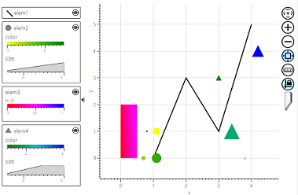

[State 0] On this page you should see Chart Viewer containing 4 elements: 'elem1' - line, 'elem2' - yellow-green circle markers, 'elem3' - red-blue heatmap, 'elem4' - green-blue triangle markers.

[User Action 1] Click 'Update' button.
[State 1] Char Viewer should contain: 'elem1' - updated line, 'elem2' - no changes, 'elem3' - removed, 'elem4' - yellow-red heatmap, 'elem5' - new element (red-blue diamond markers).